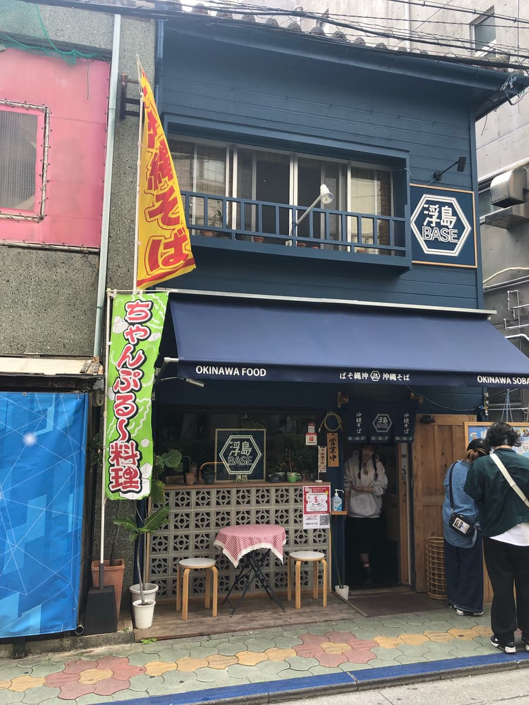
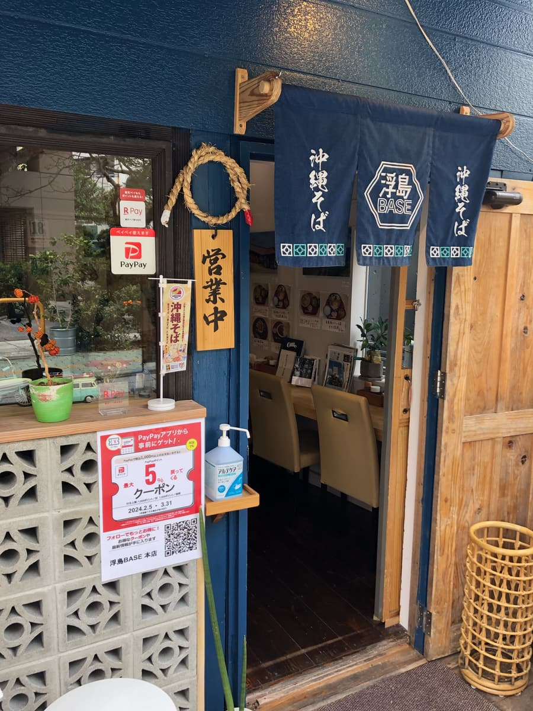
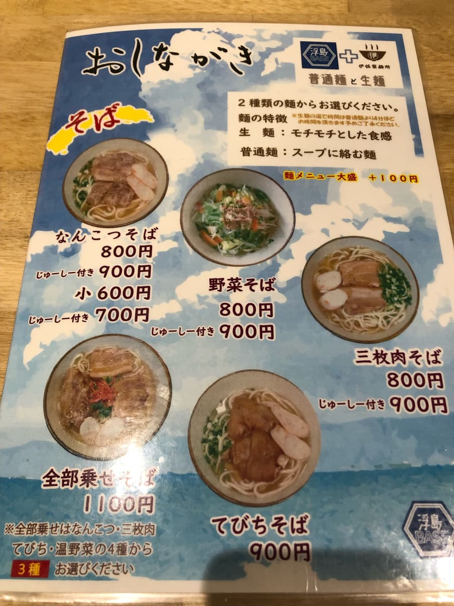
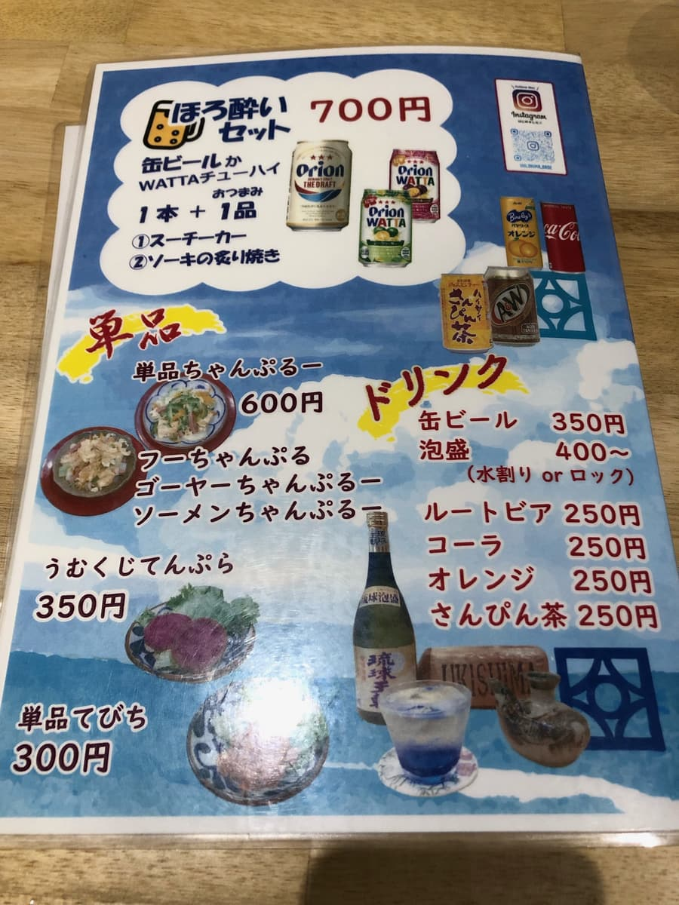
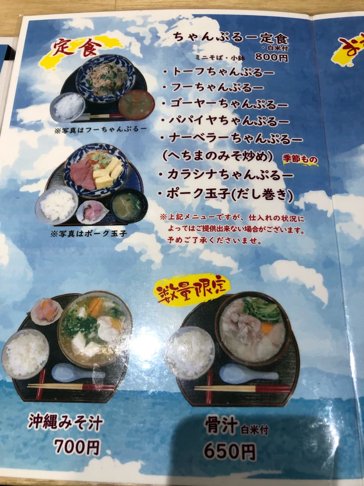
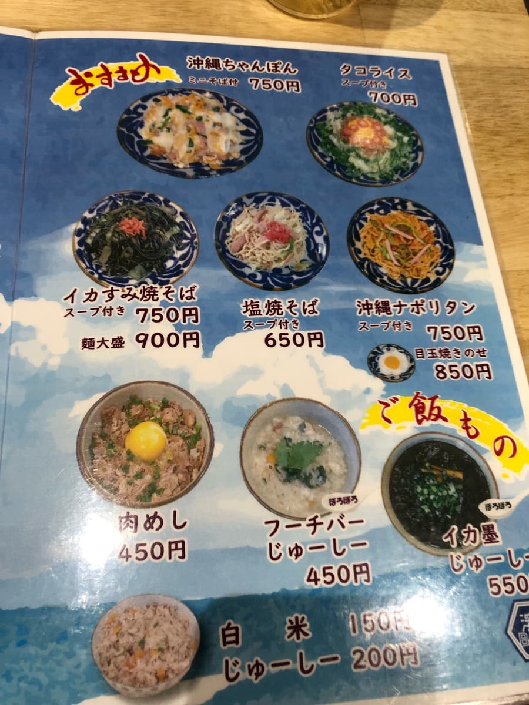
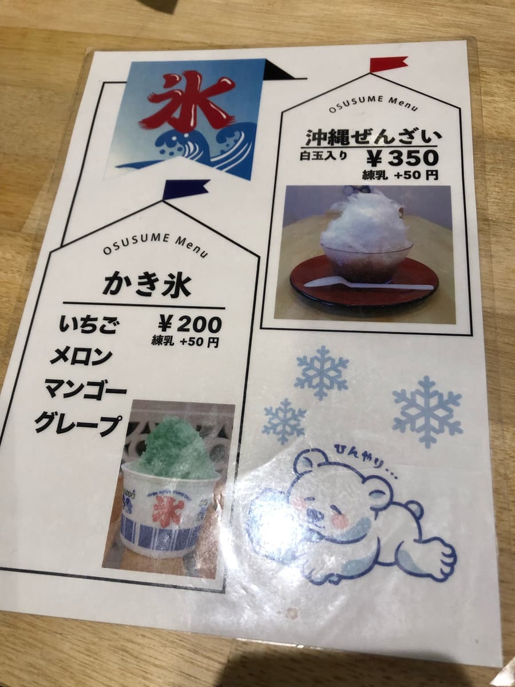
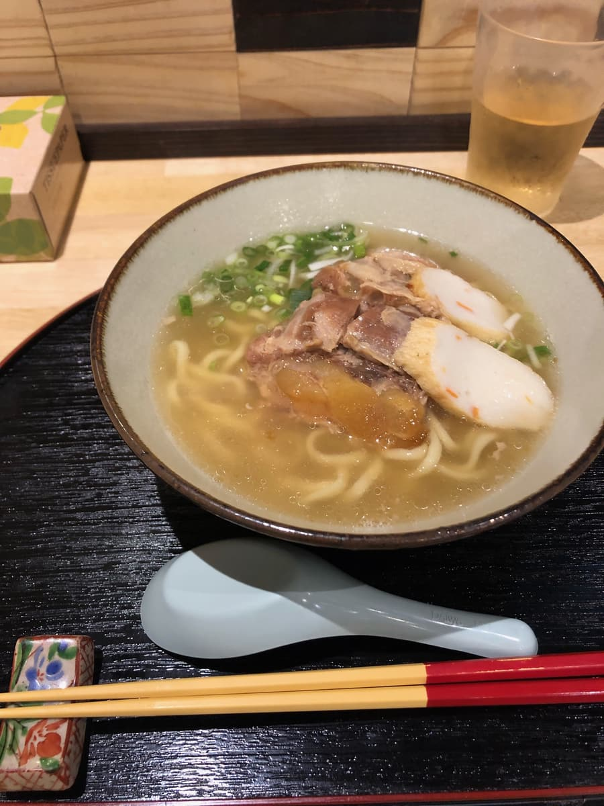
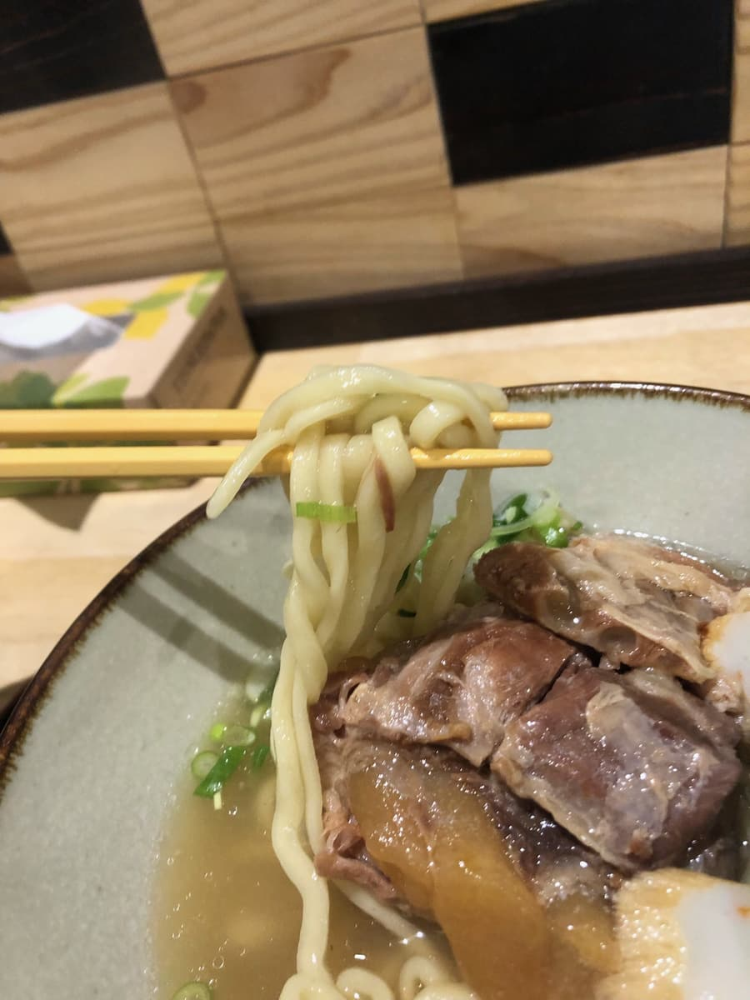

2024년 3월에 먹었습니다😄


점심때이기도 해서 가게 안은 손님으로 가득했지만, 잠시 기다리니 "이쪽으로 오세요" 하고 카운터석으로 안내받았습니다😄





이번에는 '연골 소바'를 주문. 면은 '생면(쫄깃쫄깃한 식감)'과 '보통 면(국물에 잘 어우러지는 면)' 2종류 중에서 고를 수 있어서, '생면'을 선택.

'연골 소바'가 나왔습니다. 국물은 색으로 보아 돼지뼈 베이스일까? 하고 생각하며 한 모금.
예상대로 돼지뼈 베이스였습니다😁 무난하게 맛있네요.

다음으로 면을 먹어 봅니다. 중간 가는 면으로 꽤 쫄깃한 느낌입니다.
연골 돼지갈비(난코츠 소키)는 탱글탱글하고 부드러우며, 양념은 담백한 계열이네요.
평가(9점/15점): 무난하게 맛있습니다. 국제거리에서 가까우니 관광 등으로 근처에 들렀을 때 어떠신가요? 가게 안도 막 오픈했는지 새것 같은 느낌으로 세련됐습니다.
면: ★★★☆☆（3）
수프: ★★★☆☆（3）
토핑: ★★★☆☆（3）